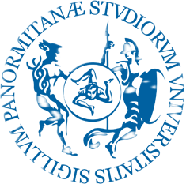

About me
I am Gianmarco La Rosa, Assistant Professor (RTT) in Geometry (MATH-02/B) at the Department of Mathematics and Computer Science, University of Palermo. I received my Ph.D. in Mathematics and Computational Sciences from the University of Palermo in 2024.
My research interests lie mainly in algebra and geometry, with particular emphasis on Lie theory, Lie and Leibniz algebras, non-associative algebraic structures, and their geometric aspects. I am also interested in homological algebra and in algebraic structures arising in differential and Poisson geometry.
Current position
Past positions
Supervisor: Prof. Marco Elio Tabacchi.
Supervisor: Prof. Marco Elio Tabacchi.
Education
-
2024 — Ph.D. in Mathematics and Computational Sciences (Doctor Europaeus), University of Palermo.
Thesis: On nilpotent Leibniz algebras, Lie biderivations, and related topics.
Supervisor: Prof. Giovanni Falcone. Co-supervisor: Prof. Alfonso Di Bartolo. -
2020 — Master’s Degree in Mathematics (LM-40), University of Palermo, cum laude.
Thesis: Extensions of Lie algebras.
Supervisor: Prof. Alfonso Di Bartolo. -
2018 — Bachelor’s Degree in Mathematics (L-35), University of Palermo.
Thesis: Modules over principal ideal domains.
Supervisor: Prof. Daniela La Mattina.
Academic activity
Teaching
For current and past teaching activities, course information, and teaching materials, see the Teaching page (in italian).
Tutoring
- 2021 – 2022 — University Tutor. Courses in Mathematical Analysis and Geometry for engineering programs.
- 2020 – 2021 — University Tutor. Courses in Geometry and Fundamentals of Mathematics for engineering and optics students.
- 2019 – 2020 — University Tutor. Exercises for Geometry and Algebra (B.Sc. in Physics).
Visiting positions
- April – May 2026 — Instituto de Matemática Pura e Aplicada (IMPA), Rio de Janeiro (Brazil). Research focus: Courant-Dorfman algebras and Courant algebroids.
- February – May 2023 — Visiting researcher, City, University of London. Research focus: homological algebra.
- October 2023 — Visiting researcher, University of Szeged. Research focus: C*-algebras and midpoint operators.
Links and contact
- Email: gianmarco.larosa@unipa.it
-

University of Palermo (homepage) -
 ORCID
ORCID
-
 ResearchGate
ResearchGate
-
 Google Scholar
Google Scholar
For publications and preprints, see the Research page.